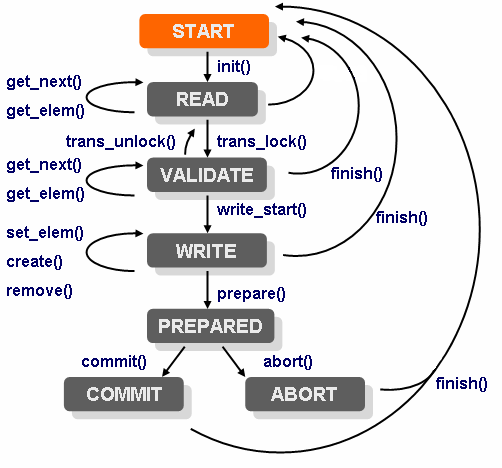

By default NSO stores all configuration data in its CDB data store. We may wish to store and configure other data in NSO than what is defined by the NSO built-in YANG models, alternatively we may wish store parts of the NSO tree outside NSO (CDB) i.e. in an external database. Say for example that we have our customer database stored in a relational database disjunct from NSO. To implement this, we must do a number of things: We must define a callpoint somewhere in the configuration tree, and we must implement what is referred to as a data provider. Also NSO executes all configuration changes inside transactions and if we want NSO (CDB) and our external database to participate in the same two-phase commit transactions we must also implement a transaction callback. All together it will appear as if the external data is part of the overall NSO configuration, thus the service model data can refer directly into this external data - typically in order to validate service instances.
The basic idea for a data provider, is that it participates entirely in each NSO transaction, and it is also responsible for reading and writing all data in the configuration tree below the callpoint. Before explaining how to write a data provider and what the responsibilities of a data provider are, we must explain how the NSO transaction manager drives all participants in a lock step manner through the phases of a transaction.
A transaction has a number of phases, the external data provider gets called in all the different phases. This is done by implementing a Transaction callback class and then registering that class. We have the following distinct phases of a NSO transaction:
-
init()In this phase the Transaction callback classinit()methods gets invoked. We use annotation on the method to indicate that it's theinit()method as in:public class MyTransCb { @TransCallback(callType=TransCBType.INIT) public void init(DpTrans trans) throws DpCallbackException { return; }Each different callback method we wish to register, must be annotated with an annotation from
TransCBTypeThe callback is invoked when a transaction starts, but NSO delays the actual invocation as an optimization. For a data provider providing configuration data,
init()is invoked just before the first data-reading callback, or just before thetransLock()callback (see below), whichever comes first. When a transaction has started, it is in a state we refer to asREAD. NSO will, while the transaction is in theREADstate, execute a series of read operations towards (possibly) different callpoints in the data provider.Any write operations performed by the management station are accumulated by NSO and the data provider doesn't see them while in the
READstate. -
transLock()- This callback gets invoked by NSO at the end of the transaction. NSO has accumulated a number of write operations and will now initiate the final write phases. Once thetransLock()callback has returned, the transaction is in theVALIDATEstate. In theVALIDATEstate, NSO will (possibly) execute a number of read operations in order to validate the new configuration. Following the read operations for validations comes the invocation of one of thewriteStart()ortransUnlock()callbacks. -
transUnlock()- This callback gets invoked by NSO if the validation failed or if the validation was done separate from the commit (e.g. by giving a validate command in the CLI). Depending on where the transaction originated, the behavior after a call totransUnlock()differs. If the transaction originated from the CLI, the CLI reports to the user that the configuration is invalid and the transaction remains in theREADstate whereas if the transaction originated from a NETCONF client, the NETCONF operation fails and a NETCONFrpcerror is reported to the NETCONF client/manager. -
writeStart()- If the validation succeeded, thewriteStart()callback will be called and the transaction enters theWRITEstate. While inWRITEstate, a number of calls to the write data callbackssetElem(),create()andremove()will be performed.If the underlying database supports real atomic transactions, this is a good place to start such a transaction.
The application should not modify the real running data here. If, later, the
abort()callback is called, all write operations performed in this state must be undone. -
prepare()- Once all write operations are executed, theprepare()callback is executed. This callback ensures that all participants have succeeded in writing all elements. The purpose of the callback is merely to indicate to NSO that the data provider is ok, and has not yet encountered any errors. -
abort()- If any of the participants die or fail to reply in theprepare()callback, the remaining participants all get invoked in theabort()callback. All data written so far in this transaction should be disposed of. -
commit()- If all participants successfully replied in their respectiveprepare()callbacks, all participants get invoked in their respectivecommit()callbacks. This is the place to make all data written by the write callbacks inWRITEstate permanent. -
finish()- And finally, thefinish()callback gets invoked at the end. This is a good place to deallocate any local resources for the transaction.The
finish()callback can be called from several different states.
The following picture illustrates the conceptual state machine a NSO transaction goes through.
|  |
NSO transaction state machine
All callbacks methods are optional. If a callback method is not implemented, it is the same as having an empty callback which simply returns.
Similar to how we have to register Transaction callbacks, we must also
register data callbacks.
The transaction callbacks cover the life span of the transaction, and
the data callbacks are used to read and write data inside a transaction.
The data callbacks have access to what is referred to as the
transaction context in the form of a DpTrans object.
We have the following data callbacks:
-
getElem()This callback is invoked by NSO when NSO needs to read the actual value of a leaf element. We must also implement thegetElem()callback for the keys. NSO invokesgetElem()on a key as an existence test.We define the
getElemcallback inside a class as:public static class DataCb { @DataCallback(callPoint="foo", callType=DataCBType.GET_ELEM) public ConfValue getElem(DpTrans trans, ConfObject[] kp) throws DpCallbackException { ..... -
existsOptional()This callback is called for all type less and optional elements, i.e.presencecontainers and leafs of typeempty. If we have presence containers or leafs of type empty we cannot use the getElem() callback to read the value of such a node, since it does not have a type. An example of a data model could be:container bs { presence ""; tailf:callpoint bcp; list b { key name; max-elements 64; leaf name { type string; } container opt { presence ""; leaf ii { type int32; } } leaf foo { type empty; } } }The above YANG fragment has 3 nodes that may or may not exist and that do not have a type. If we do not have any such elements, nor any operational data lists without keys (see below), we do not need to implement the existsOptional() callback.
If we have the above data model, we must implement the existsOptional(), and our implementation must be prepared to reply on calls of the function for the paths /bs, /bs/b/opt, and /bs/b/foo. The leaf /bs/b/opt/ii is not mandatory, but it does have a type namely int32, and thus the existence of that leaf will be determined through a call to the getElem() callback.
The existsOptional() callback may also be invoked by NSO as "existence test" for an entry in an operational data list without keys. Normally this existence test is done with a getElem() request for the first key, but since there are no keys, this callback is used instead. Thus if we have such lists, we must also implement this callback, and handle a request where the keypath identifies a list entry.
-
iterator() and getKey()This pair of callback is used when NSO wants to traverse a YANG list. The job of theiterator()callback is to return aIteratorobject that is invoked by the library. For eachObjectreturned by theiterator, the NSO library will invoke thegetKey()callback on the returned object. Thegetkeycallback shall return aConfKeyvalue.An alternative to the
getKey()callback is to register the optionalgetObject()callback whose job it is to return not just the key, but the entire YANG list entry. It is possible to register bothgetKey()andgetObject()or either. If thegetObject()is registered, NSO will attempt to use it only when bulk retrieval is executed.
We also have two additional optional callbacks that may be implemented for efficiency reasons.
-
getObject()If this optional callback is implemented, the work of the callback is to return an entireobject, i.e. a list instance. This is not the samegetObject()as the one that is used in combination with theiterator() -
numInstances()When NSO needs to figure out how many instances we have of a certain element, by default NSO will repeatedly invoke theiterator()callback. If this callback is installed, it will be called instead.
The following example illustrates an external data provider.
The example is possible to run from the examples collection. It resides
under ${NCS_DIR}/examples.ncs/getting-started/developing-with-ncs/6-extern-db.
The example comes with a tailor made database - MyDb.
That source code is provided with the example but not shown here.
However the functionality will be obvious from the method names
like newItem(), lock(), save() etc.
Two classes are implemented, one for the Transaction callbacks and another for the Data callbacks.
The data model we wish to incorporate into NSO is a trivial list of work items. It looks like:
Example 62. work.yang
module work {
namespace "http://example.com/work";
prefix w;
import ietf-yang-types {
prefix yang;
}
import tailf-common {
prefix tailf;
}
description "This model is used as a simple example model
illustrating how to have NCS configuration data
that is stored outside of NCS - i.e not in CDB";
revision 2010-04-26 {
description "Initial revision.";
}
container work {
tailf:callpoint workPoint;
list item {
key key;
leaf key {
type int32;
}
leaf title {
type string;
}
leaf responsible {
type string;
}
leaf comment {
type string;
}
}
}
}Note the callpoint directive in the model, it indicates that an external Java callback must register itself using that name. That callback will be responsible for all data below the callpoint.
To compile the work.yang
data model and then also to generate Java code for the data model we
invoke make all in the example package src directory.
The Makefile will compile the yang files in the package, generate
Java code for those data models and then also invoke ant in the
Java src directory.
The Data callback class looks as follows:
Example 63. DataCb class
@DataCallback(callPoint=work.callpoint_workPoint,
callType=DataCBType.ITERATOR)
public Iterator<Object> iterator(DpTrans trans,
ConfObject[] keyPath)
throws DpCallbackException {
return MyDb.iterator();
}
@DataCallback(callPoint=work.callpoint_workPoint,
callType=DataCBType.GET_NEXT)
public ConfKey getKey(DpTrans trans, ConfObject[] keyPath,
Object obj)
throws DpCallbackException {
Item i = (Item) obj;
return new ConfKey( new ConfObject[] { new ConfInt32(i.key) });
}
@DataCallback(callPoint=work.callpoint_workPoint,
callType=DataCBType.GET_ELEM)
public ConfValue getElem(DpTrans trans, ConfObject[] keyPath)
throws DpCallbackException {
ConfInt32 kv = (ConfInt32) ((ConfKey) keyPath[1]).elementAt(0);
Item i = MyDb.findItem( kv.intValue() );
if (i == null) return null; // not found
// switch on xml elem tag
ConfTag leaf = (ConfTag) keyPath[0];
switch (leaf.getTagHash()) {
case work._key:
return new ConfInt32(i.key);
case work._title:
return new ConfBuf(i.title);
case work._responsible:
return new ConfBuf(i.responsible);
case work._comment:
return new ConfBuf(i.comment);
default:
throw new DpCallbackException("xml tag not handled");
}
}
@DataCallback(callPoint=work.callpoint_workPoint,
callType=DataCBType.SET_ELEM)
public int setElem(DpTrans trans, ConfObject[] keyPath,
ConfValue newval)
throws DpCallbackException {
return Conf.REPLY_ACCUMULATE;
}
@DataCallback(callPoint=work.callpoint_workPoint,
callType=DataCBType.CREATE)
public int create(DpTrans trans, ConfObject[] keyPath)
throws DpCallbackException {
return Conf.REPLY_ACCUMULATE;
}
@DataCallback(callPoint=work.callpoint_workPoint,
callType=DataCBType.REMOVE)
public int remove(DpTrans trans, ConfObject[] keyPath)
throws DpCallbackException {
return Conf.REPLY_ACCUMULATE;
}
@DataCallback(callPoint=work.callpoint_workPoint,
callType=DataCBType.NUM_INSTANCES)
public int numInstances(DpTrans trans, ConfObject[] keyPath)
throws DpCallbackException {
return MyDb.numItems();
}
@DataCallback(callPoint=work.callpoint_workPoint,
callType=DataCBType.GET_OBJECT)
public ConfValue[] getObject(DpTrans trans, ConfObject[] keyPath)
throws DpCallbackException {
ConfInt32 kv = (ConfInt32) ((ConfKey) keyPath[0]).elementAt(0);
Item i = MyDb.findItem( kv.intValue() );
if (i == null) return null; // not found
return getObject(trans, keyPath, i);
}
@DataCallback(callPoint=work.callpoint_workPoint,
callType=DataCBType.GET_NEXT_OBJECT)
public ConfValue[] getObject(DpTrans trans, ConfObject[] keyPath,
Object obj)
throws DpCallbackException {
Item i = (Item) obj;
return new ConfValue[] {
new ConfInt32(i.key),
new ConfBuf(i.title),
new ConfBuf(i.responsible),
new ConfBuf(i.comment)
};
}
First we see how the Java annotations are used to declare the type of
callback for each method.
Secondly, we see how the
getElem() callback inspects the
keyPath parameter passed to it
to figure out exactly which element NSO wants to read.
The keyPath is an array of ConfObject values.
Keypaths are central to the understanding of the NSO Java library
since they are used to denote objects in the configuration.
A keypath uniquely identifies an element in the instantiated
configuration tree.
Furthermore, the getElem() switches on the tag
keyPath[0] which is a ConfTag using
symbolic constants from the class "work". The "work" class was generated
through the call to ncsc --emit-java ....
The three write callbacks, setElem(),
create() and remove()
all return the value Conf.REPLY_ACCUMULATE.
If our backend database has real support to abort transactions,
it is a good idea to initiate a new backend database transaction
in the Transaction callback
init() (more on that later), whereas if our
backend database doesn't support proper
transactions, we can fake real transactions by
returning Conf.REPLY_ACCUMULATE instead
of actually writing the data. Since the final verdict of the NSO
transaction as a whole may very well be
to abort the transaction, we must be prepared to undo all write
operations. The
Conf.REPLY_ACCUMULATE return value means that we ask
the library to cache the write
for us.
The Transaction callback class, looks like:
Example 64. TransCb class
@TransCallback(callType=TransCBType.INIT)
public void init(DpTrans trans) throws DpCallbackException {
return;
}
@TransCallback(callType=TransCBType.TRANS_LOCK)
public void transLock(DpTrans trans) throws DpCallbackException {
MyDb.lock();
}
@TransCallback(callType=TransCBType.TRANS_UNLOCK)
public void transUnlock(DpTrans trans) throws DpCallbackException {
MyDb.unlock();
}
@TransCallback(callType=TransCBType.PREPARE)
public void prepare(DpTrans trans) throws DpCallbackException {
Item i;
ConfInt32 kv;
for (Iterator<DpAccumulate> it = trans.accumulated();
it.hasNext(); ) {
DpAccumulate ack= it.next();
// check op
switch (ack.getOperation()) {
case DpAccumulate.SET_ELEM:
kv = (ConfInt32) ((ConfKey) ack.getKP()[1]).elementAt(0);
if ((i = MyDb.findItem( kv.intValue())) == null)
break;
// check leaf tag
ConfTag leaf = (ConfTag) ack.getKP()[0];
switch (leaf.getTagHash()) {
case work._title:
i.title = ack.getValue().toString();
break;
case work._responsible:
i.responsible = ack.getValue().toString();
break;
case work._comment:
i.comment = ack.getValue().toString();
break;
}
break;
case DpAccumulate.CREATE:
kv = (ConfInt32) ((ConfKey) ack.getKP()[0]).elementAt(0);
MyDb.newItem(new Item(kv.intValue()));
break;
case DpAccumulate.REMOVE:
kv = (ConfInt32) ((ConfKey) ack.getKP()[0]).elementAt(0);
MyDb.removeItem(kv.intValue());
break;
}
}
try {
MyDb.save("running.prep");
} catch (Exception e) {
throw
new DpCallbackException("failed to save file: running.prep",
e);
}
}
@TransCallback(callType=TransCBType.ABORT)
public void abort(DpTrans trans) throws DpCallbackException {
MyDb.restore("running.DB");
MyDb.unlink("running.prep");
}
@TransCallback(callType=TransCBType.COMMIT)
public void commit(DpTrans trans) throws DpCallbackException {
try {
MyDb.rename("running.prep","running.DB");
} catch (DpCallbackException e) {
throw new DpCallbackException("commit failed");
}
}
@TransCallback(callType=TransCBType.FINISH)
public void finish(DpTrans trans) throws DpCallbackException {
;
}
}
We can see how the prepare() callback goes through all
write operations and actually execute them towards our
database MyDb.